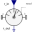
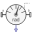
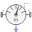

PartialRelativeSensorBase class for relative sensor models |
Information
This information is part of the Modelica Standard Library maintained by the Modelica Association.
This is a base class of a 3-dim. mechanical component with two frames frame_a and frame_b in order to measure a relative quantity between these two connectors. This partial class can be used for sensors defined either by components or by equations.
Connectors (2)
Extended by (6)
|  |
Modelica.Mechanics.MultiBody.Sensors Transform relative vector in to another frame |
|
Modelica.Mechanics.MultiBody.Sensors Measure relative angular velocity between two frame connectors |
|
|  |
Modelica.Mechanics.MultiBody.Sensors Measure relative angles between two frame connectors |
|
Modelica.Mechanics.MultiBody.Sensors Measure relative velocity vector between the origins of two frame connectors |
|
|  |
Modelica.Mechanics.MultiBody.Sensors Measure relative position vector between the origins of two frame connectors |
|
Modelica.Mechanics.MultiBody.Sensors Measure relative kinematic quantities between two frame connectors |